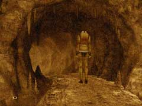

|
夢の世界で
「幸福の木の実」を使い、ハンスの夢の世界へ移動したあなたの目の前に、かつて訪れたバラディレーンの町並みが見えてくるだろう。ハンスを夢の世界から引っ張り出すには、どうしたらよいだろうか? あなたがやらねばならないことは、次の通りである。 ・洞窟の中で、あるアイテムを探す。 ・アンナからいくつかの情報を聞き出す。 ・カラクリ人形の工場へ移動する

・夢の世界に張ってすぐの所に洞窟がある。 ・Syberiaをプレーした人ならば、何があるかはだいたい想像が付くはずだ。 ・このアイテムは、後々必要になってくる。忘れずに持っていこう。 ・アンナは、ハンスのことや工場のことを知っている。 ・ハンスは今どうしているかを聞けるだろう。 ・また、工場で働く人の時間割も分かるだろう。 ・工場の入り口はどこにあるだろうか? ・道路を挟んで、工場と住宅街は区切られている。 ・どうしても分からなければ、壁に沿って探してみよう。 ・もし、工場の扉が開いていなかったら、開く時間を調べてみよう。
| 次へ >> |
|